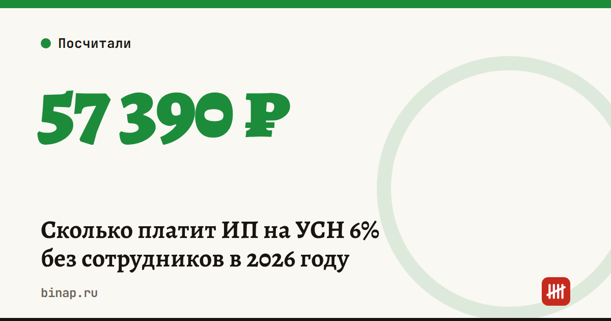

Сколько платит ИП на УСН 6% без сотрудников в 2026 году

ИП на УСН «доходы» без работников платит в 2026 году два вида платежей: страховые взносы «за себя» и налог 6%. Хорошая новость: налог можно уменьшить на всю сумму взносов. Поэтому итоговая нагрузка считается проще, чем кажется.
Коротко
- Фиксированные взносы за 2026 год — 57 390 ₽, срок — 28 декабря 2026 года.
- Плюс 1% с дохода сверх 300 000 ₽, но не больше 321 818 ₽. Срок — 1 июля 2027 года.
- Налог 6% уменьшается на взносы полностью — ИП без сотрудников может довести его до нуля.
- Итог: если доход выше примерно 1,09 млн ₽, вы платите ровно 6% от дохода — взносы «сидят» внутри налога. Если ниже — платите только взносы, и это больше 6%.
Как считать
- Налог: доход × 6%.
- Взносы: 57 390 ₽ + 1% × (доход − 300 000 ₽).
- К уплате налога: налог минус взносы. Если получилось меньше нуля — налог 0 ₽.
- Всего за год: взносы + налог к уплате.
Налог уменьшают на взносы, которые относятся к этому году, даже если 1% вы заплатите позже — до 1 июля следующего года.
Пример на цифрах
| Доход за 2026 год | Налог 6% до вычета | Взносы (57 390 ₽ + 1%) | Налог к уплате | Всего за год | Нагрузка |
|---|---|---|---|---|---|
| 600 000 ₽ | 36 000 ₽ | 60 390 ₽ | 0 ₽ | 60 390 ₽ | 10,1% |
| 1 200 000 ₽ | 72 000 ₽ | 66 390 ₽ | 5 610 ₽ | 72 000 ₽ | 6% |
| 3 000 000 ₽ | 180 000 ₽ | 84 390 ₽ | 95 610 ₽ | 180 000 ₽ | 6% |
| 5 000 000 ₽ | 300 000 ₽ | 104 390 ₽ | 195 610 ₽ | 300 000 ₽ | 6% |
Откуда граница 1,09 млн ₽: при таком доходе налог 6% как раз равен взносам. Ниже границы вычет «сгорает» — переносить остаток на следующий год нельзя.
Сроки на год
| Что | Уведомление по ЕНП | Оплата |
|---|---|---|
| Аванс за I квартал | до 25 апреля | до 28 апреля |
| Аванс за полугодие | до 25 июля | до 28 июля |
| Аванс за 9 месяцев | до 25 октября | до 28 октября |
| Фиксированные взносы за год | не нужно | до 28 декабря |
| Налог за год + декларация | декларация до 25 апреля следующего года | до 28 апреля следующего года |
| 1% с дохода сверх 300 000 ₽ | не нужно | до 1 июля следующего года |
Если срок выпадает на выходной, он переносится на ближайший рабочий день. Например, в 2026 году уведомление за 9 месяцев подают до 26 октября — подробно в нашей статье про уведомления по ЕНП в октябре.
Как платить меньше без риска
- Платите взносы частями в течение года. Тогда авансы по УСН уменьшаются сразу, и не придётся «замораживать» деньги в переплате налога до декабря. Для этого взносы должны лежать на ЕНС к сроку аванса, а в уведомлении ничего подавать не нужно.
- Проверьте ставку в своём регионе. Регионы могут снижать ставку УСН «доходы» с 6% до 1%. Посмотрите закон своего субъекта или сервис ФНС «Справочная информация о ставках».
- Сравните с «доходы минус расходы». Если расходы больше 60% выручки, второй объект часто выгоднее. Посчитать можно в нашем калькуляторе УСН. Сменить объект — только с 1 января, уведомление до 31 декабря.
Когда расчёт выше не подходит
- Наняли первого сотрудника. Налог тогда можно уменьшить на взносы не больше чем наполовину, а за сотрудника появятся свои взносы и НДФЛ.
- Доход больше 20 млн ₽. На УСН появляется НДС — подробно в статье про порог НДС 20 млн ₽.
- Открыли ИП не с января. Фиксированные взносы считают пропорционально дням с даты регистрации.
Что сделать сейчас
- Посчитайте доход с января и подставьте в таблицу выше.
- До 28 декабря заплатите остаток фиксированных взносов — 57 390 ₽ минус то, что уже внесли.
- Если доход перевалил за 300 000 ₽, решите: заплатить 1% до конца года и сразу уменьшить налог или до 1 июля 2027 года.
Частые вопросы
Если дохода не было, взносы платить? Да. Фиксированные 57 390 ₽ платят, пока ИП зарегистрирован, даже при нулевом доходе.
Можно ли не платить налог совсем? Да, если доход меньше примерно 1,09 млн ₽: взносы полностью «съедят» налог.
Нужно ли уведомление по ЕНП на взносы ИП за себя? Нет. Его подают по авансам УСН, а фиксированные взносы и 1% платят без уведомления.